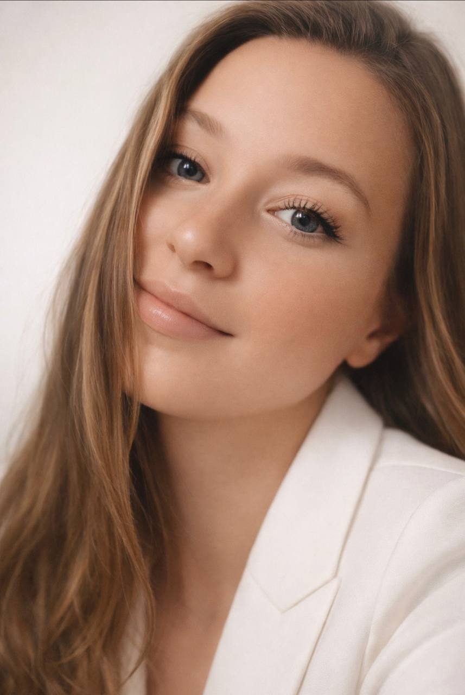
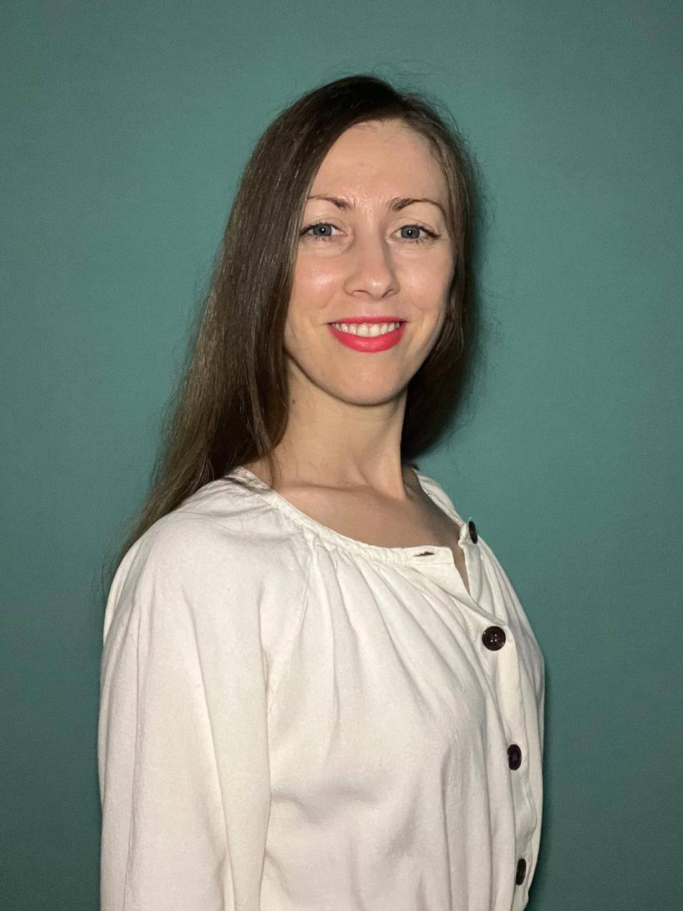
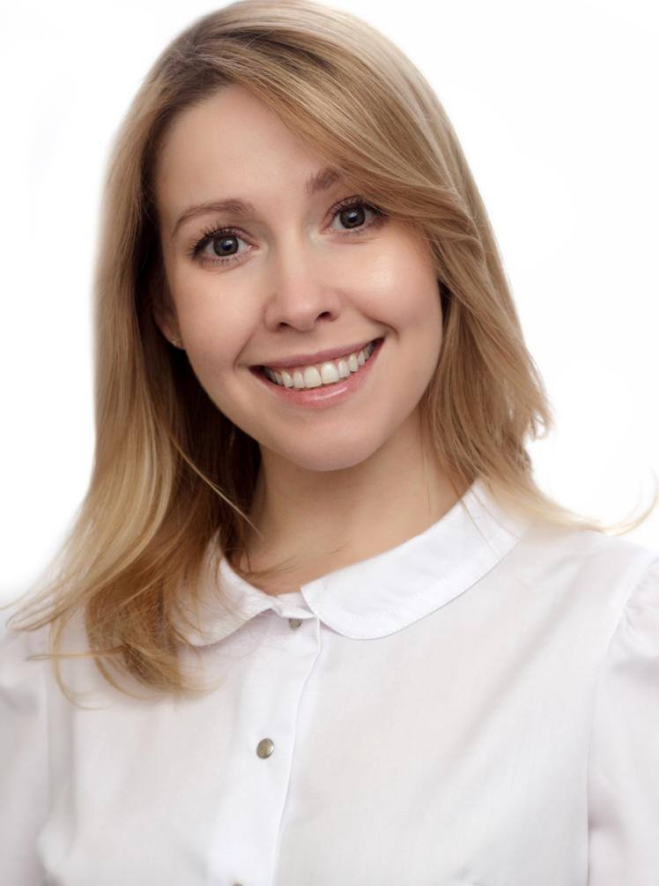
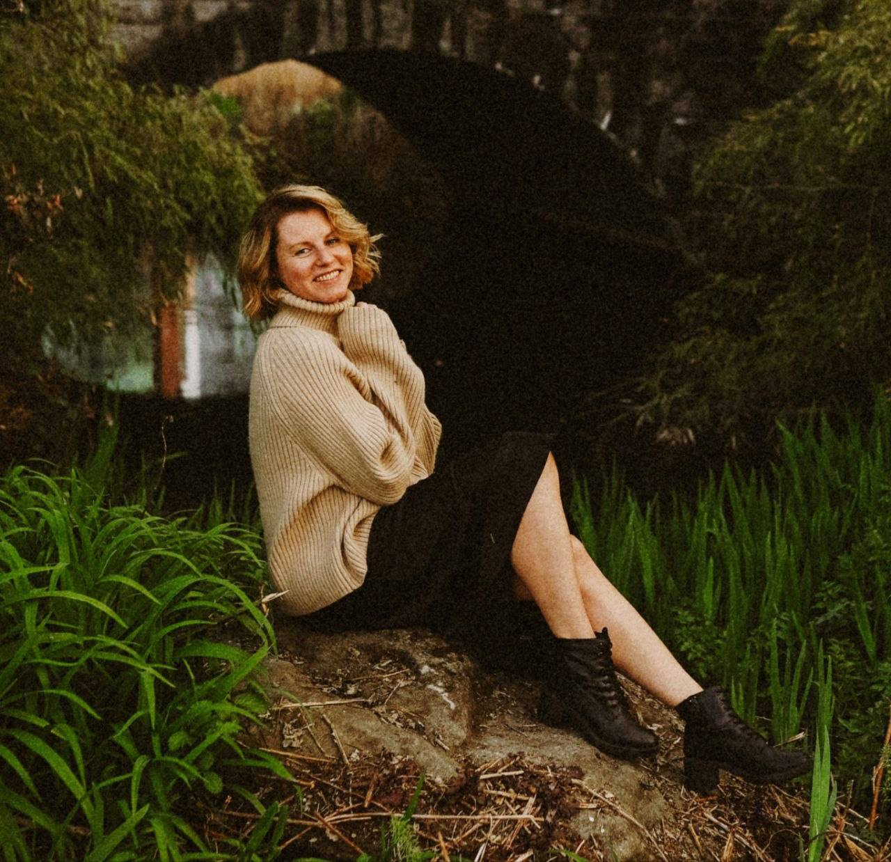
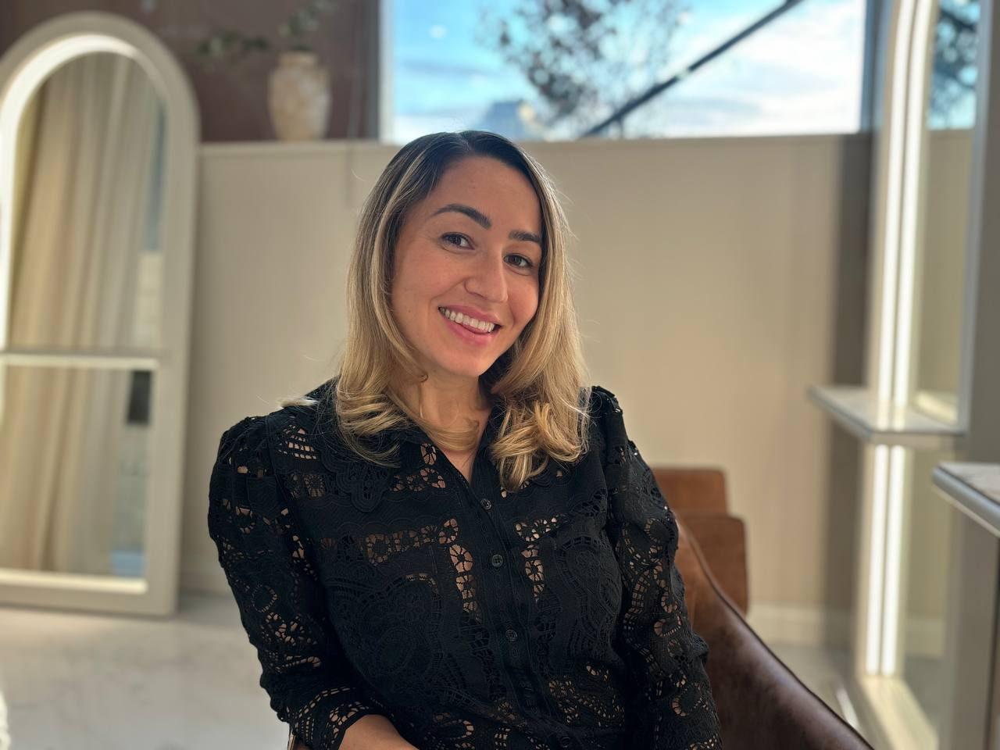

Месяц, в котором мы знакомились с телом заново: через воду, движение, состояние, органы чувств, заботу и честную границу между усилием и насилием над собой.
760 сообщений · 5 гостевых голосов · 6 самостоятельных практик
Как читать эту капсулу
Если вы не были в клубе в мае, эта капсула всё равно должна работать сама: как карта месяца, короткий практикум и мягкий вход в тему тела без необходимости догонять весь чат.
Арка месяца
Что менялось от воды, еды и движения к состоянию, ресурсу и границе между усилием и давлением.
Пять голосов
Движение, психосоматика, женское здоровье, йога и мягкое формирование привычки через 5 минут.
Практика
Шесть упражнений из архива мая, которые можно попробовать без доступа к встречам и записям.
Что мы прошли вместе
Вода, еда, движение
Май начался с самого простого: как тело пьёт, ест, двигается и восстанавливается. Вода стала первым мягким входом в тему, за ней пришли разговоры о завтраках, белке, привычках и челлендже: шаги, планка, Сурья, китайская гимнастика.
Встретиться с собой
Первая неделя открылась свиданием со своим телом: музыка, зеркало, любящий взгляд и вопрос «чего хочет моё тело прямо сейчас?». После вводной встречи «Диалог с телом» появились первые личные ответы.
Состояние как язык
На второй неделе тело звучало раньше слов: через напряжение, усталость, раздражение, вдохновение, желание остановиться. Практики помогали не «починить» себя, а спросить, что тело пытается сказать.
Тело как ресурс
Третья неделя собрала три опоры: сон, питание, движение, и пять каналов чувств. Ресурс возвращался через температуру воды, мягкость одежды, запахи, музыку, дыхание, прогулку, красоту.
Усилие и насилие
В финале месяца вопрос стал точнее: где действие оживляет, а где начинается давление на себя? Тело не только болит, когда сломалось. Оно разговаривает раньше.
Сквозные ритуалы
Четверг благодарности телу
Мы говорили: «Дорогое тело, я благодарна тебе…», ставили будильники, делали пять глубоких вдохов и выдохов, переводили внимание внутрь.
Пятница красоты и органы чувств
Пятница прошла через зрение, запахи, вкус, слух, осязание. Красота стала не украшением, а топливом, способом вернуться в момент и почувствовать жизнь.
Челлендж без насилия
10 000 шагов, планка, Сурья, пресс, танцы, йога. Но главный сдвиг был не в цифрах, а в различении: где дисциплина поддерживает, а где тело просит мягкости.
Мини-практикум
Выберите одну практику на сегодня или пройдите весь блок как мягкую неделю знакомства с телом. Всё ниже собрано из сообщений мая.
1. Свидание с телом на 5-10 минут
Выделите время наедине, включите любимую музыку, подойдите к зеркалу и посмотрите на себя любящими глазами. Если хочется смелее, можно остаться в белье или без; если нет, достаточно просто встретиться с собой взглядом.
Какой я себя вижу?
Что мне нравится?
Чего хочет моё тело прямо сейчас?
Из архива мая
2. Благодарность телу с будильниками
Поставьте сигнал 1-3 раза в день. Каждый раз сделайте 5 глубоких вдохов и выдохов, переведите внимание внутрь и заметьте ощущения, эмоции, напряжение или расслабление. Начните словами: «Дорогое тело, я благодарна тебе...»
Из архива мая
3. Чек-ин состояния
Несколько раз в день спросите себя: как я себя чувствую прямо сейчас? Что происходит в моём теле? Где есть напряжение, лёгкость, тепло или зажатость? От чего моё состояние меняется?
В мае эта практика помогала не спорить с телом, а услышать его раньше слов.
Из архива мая
4. Вход в привычку через 5 минут
Если хочется добавить движение, дыхание или мягкую гимнастику, начните с 5 минут. В мае Зарина делилась, что так легче договориться с мозгом: 20 минут могут вызвать сопротивление, а 5 минут ощущаются возможными.
Из архива мая
5. Неделя органов чувств
Выберите одну базовую опору на неделю: сон, питание, движение, вода или паузы на отдых. Параллельно проживите каждый день через один канал чувств.
ПнОсязание: вода, ткань, опора под ногами.
ВтВкус: еда медленнее, внимательнее, с интересом.
СрСлух: музыка, тишина, природа, дыхание.
ЧтОбоняние: цветы, лес, чай, кофе, крем.
ПтЗрение: свет, цвет, закат, детали, лица.
В конце недели спросите: через какой канал мне легче всего возвращать ресурс?
Из архива мая
6. Граница между усилием и давлением
Возьмите в дневник вопросы финальной недели:
Через какие действия моё тело оживает?
После каких задач я чувствую энергию, а после каких опустошение?
Где мне помогает дисциплина, а где я уже живу через давление?
Как ощущается в теле «я хочу» и как ощущается «я должна»?
В каких моментах я игнорирую сигналы тела?
Как забота о себе выглядит в действиях?
Из архива мая
Бонус: мягкое расслабление по Джекобсону
Можно попробовать короткую версию прогрессивной мышечной релаксации: напрягать группу мышц на 5-7 секунд, затем отпускать на 15-20 секунд, на напряжении делать вдох, на расслаблении глубокий выдох.
В архиве был полный проход снизу вверх: стопы и икры, бёдра и ягодицы, живот и спина, кисти и предплечья, плечи и шея, лицо, затем 2-3 минуты неподвижного отдыха. Делайте мягко и без боли.
Из архива мая
Пять граней тела

Натали

Анастасия

Юлия

София

Зарина
Натали
Движение как освобождение: через дыхание, динамическую медитацию и мягкое возвращение к себе после лет жёсткой дисциплины. Что унести: обычные действия можно делать не на автомате, а как маленькое посвящение себе и телу.
Анастасия Биленко
Психосоматика и практики, где тело не врёт: напряжение, злость, плечи, челюсть, сон, расслабление и связь мозга с телом. Что унести: начинать с наблюдения и мягкого телесного эксперимента, а не с насилия над симптомом.
Юлия Лобашкова
Женское здоровье, цикл, гормоны, базовая поддержка и очень бережная интонация в деликатной медицинской теме. Что унести: вопросы о теле имеют право на бережный, внимательный разговор, особенно в темах здоровья.
София Плетнёва
Йога как контакт с телом, дыханием и фокусом, не про форму, а про безопасность, опору и присутствие. Что унести: в движении важны не идеальная форма, а дыхание, внимание к ощущениям и умение быть в моменте.
Зарина Хас
Движение, тай-чи, цигун, китайская гимнастика и пять минут как честный вход в привычку без давления. Что унести: начать можно с малого, если малое действительно делается.
Пять входов, которые можно забрать себе
Через движение: спросить тело, какое движение ему подходит сегодня, а не какой режим нужно выдержать.
Через расслабление: пройти тело снизу вверх и заметить разницу между напряжением и отпусканием.
Через медицину: формулировать вопросы о женском здоровье без стыда и грубости к себе.
Через йогу: использовать дыхание, фокус и простые асаны как способ вернуться в безопасность и опору.
Через привычку: дать себе 5 минут вместо требования сразу стать новой версией себя.
«меня очень удивило как у тебя получилось так мягко и легко помочь расслабиться и поговорить с телом..»
Книга и голоса
Джулия Эндерс. «Очаровательный кишечник»
Книга месяца пришла как приглашение смотреть на организм с интересом и уважением, не через критику и контроль. В чате она стала практичным разговором о пищеварении, микробиоте, привычках и маленьких телесных открытиях.
Что забрать без обязательного чтения: интерес к устройству тела как форму любви. Не исправлять тело только тогда, когда оно мешает, а узнавать его заранее: как оно переваривает, чувствует, устаёт, просит воду, движение, паузу или поддержку.
«Дорогое тело, благодарю тебя за то, что ты позволяешь мне чувствовать.. тепло, холод, влагу, прикосновения, объятия, поцелуи, боль, эмоции.»
«И на данный момент мне совсем не хочется идти в жёсткие челленджи или ещё сильнее себя напрягать. Наоборот, хочется найти свою золотую середину...»
«Я чувствую центр в себе, а не в других людях. Приятно прийти к этому осознанию 💖»
Инсайт месяца
В мае самый сильный разворот был не в том, чтобы больше знать о теле, а в том, чтобы перестать обращаться к нему только тогда, когда что-то болит или выходит из строя.
Мы начали слышать тело раньше: в усталости, удовольствии, сопротивлении, желании движения, желании сна, в простом «разрешаю» и в границе между дисциплиной и давлением.
Тело стало не задачей на исправление, а домом, с которым можно разговаривать.
После чтения: один честный шаг
Выберите только одну вещь из капсулы и сделайте её в ближайшие 24 часа: поставить будильник благодарности, лечь спать раньше, выйти на короткую прогулку, включить 5 минут движения, записать ответы на вопросы про «хочу» и «должна» или просто спросить тело, чего оно хочет прямо сейчас.
В мае ценность была не в идеальном выполнении, а в том, чтобы снова заметить живой контакт.